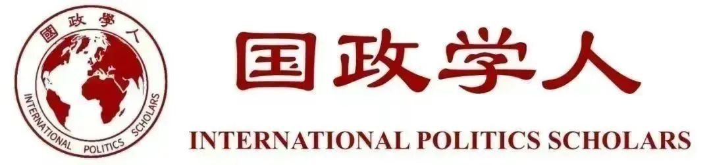
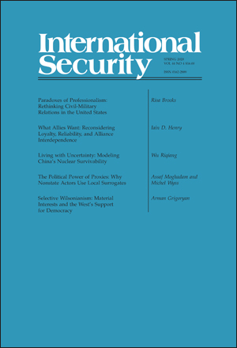

收录于合集 #新刊速递 123个

期刊简介

《国际安全》（International Security）是经过国际和国家安全领域同行评议的顶级学术期刊，其刊发的论文主题广泛，涵盖战争与和平等传统安全问题与环境、人口、人道主义、恐怖主义等时新的安全议题。它成立于1976年，由哈佛大学贝尔弗科学与国际事务中心（Belfer Center for Science and International Affairs at Harvard University）编辑，麻省理工学院出版社（MIT Press）出版，每年四期。2018年影响力因子为4.500，在“国际关系”类别的85种期刊中排名第二位。
本期编委
【编译】 周玫琳 赵雷 王泽尘 王川 崔宇涵
【校对】 扎西旺姆
【审核】 施榕
【排版】 王国伟

本期目录
01 The Political Power of Proxies: Why Nonstate Actors Use Local Surrogates
代理人的政治权力:为何非国家行为体使用地方替代者
02 What Allies Want: Reconsidering Loyalty, Reliability, and Alliance Interdependence
盟友需要什么:再思考忠诚、可靠性与同盟的相互依赖
03 Paradoxes of Professionalism: Rethinking Civil-Military Relations in the United States
职业主义悖论：美国军政关系的再思考
04 Selective Wilsonianism: Material Interests and the West’s Support for Democracy
选择性的威尔逊主义：物质利益和西方国家对民主的支持
05 Living with Uncertainty: Modeling China’s Nuclear Survivability
与不确定性共存：围绕中国核生存能力的建模
01
代理人的政治权力：为何非国家行为体使用地方替代者 ****
【题目】 The Political Power of Proxies: Why Nonstate Actors Use Local Surrogates
【作者】 Assaf Moghadam，西点反恐中心(CTC)非常驻研究员，以色列跨学科中心(IDC) 副教授，IDC国际反恐研究所(ICT)学术事务主任；Michel Wyss，苏黎世联邦理工学院军事学院(MILAC)科学助理。
【摘要】
学界对于涉及代理人冲突的研究主要集中于国家，将赞助者和代理人之间的关系主要视作国家利用非国家行为者作为代理人的关系。同时，则对非国家行为体作为赞助者的赞助者- 代理人安排（sponsor-proxy arrangements）的关注要少得多，在这种安排中，非国家行为体扮演着十分重要的角色。那么，非国家行为体为何以及如何赞助代理人？不似国家赞助者那样主要看重代理人的军事效用，非国家行为体选择和利用代理人主要是因其政治价值。简言之，国家倾向于资助军事代理人，而非国家行为体倾向于资助其政治性的辅助机构（ancillaries）。这两种不同的研究路径都是由基于行动者的内源性特点和结构的外源性约束所决定的。对3个在意识形态与能力均不同的非国家行为体——阿拉伯半岛的基地组织、叙利亚人民保护组织、以及黎巴嫩真主党——的案例分析证实了这一论点，但也表明了控制代理人的能力和意愿因赞助者的能力而有所差异。如真主党一般的强能力的非国家赞助者的行为与国家赞助者相似，但也仅是例外。大多数非国家赞助者不那么具备主导性，使得他们与代理人的关系更具交易性和实用性，最终也不如国家赞助者与其代理人之间的关系那样持久。
Studies of conflicts involving the use of surrogates focus largely on states, viewing the relationship between sponsors and proxies primarily as one in which states utilize nonstate actors as proxies. They have devoted far less attention to sponsor-proxy arrangements in which nonstate actors play super- ordinate roles as sponsors in their own right. Why and how do nonstate actors sponsor proxies? Unlike state sponsors, which value proxies primarily for their military utility, nonstate sponsors select and utilize proxies mainly for their perceived political value. Simply put, states tend to sponsor military surrogates, whereas nonstate actors sponsor political ancillaries. Both endogenous actor-based traits and exogenous structural constraints account for these different approaches. An analysis of three case studies of nonstate sponsors that differ in terms of ideology and capacity—al-Qaida in the Arabian Peninsula, the People’s Protection Units in Syria, and Hezbollah in Lebanon—confirms this argument, but also suggests that the ability and desire to control proxies varies with the sponsor’s capacity. High-capacity nonstate sponsors such as Hezbollah behave similarly to state sponsors, but remain exceptional. Most nonstate sponsors are less dominant, rendering the relationships to their proxies more transactional and pragmatic, and ultimately less enduring than those of state sponsors and their clients.
【编译】 崔宇涵
【校对】 扎西旺姆
02
盟友需要什么：再思考忠诚、可靠性与同盟的相互依赖 ****
【题目】 What Allies Want: Reconsidering Loyalty, Reliability, and Alliance Interdependence
【作者】 Iain D. Henry，澳大利亚国立大学战略与国防研究中心讲师。
【摘要】
领导人认为，如果他们的国家在危机期间抛弃了一个盟友，那么他们国家的其他盟友在未来也会有类似的不忠行为(disloyalty)。因此，一次不忠行为可能损害，甚至破坏与其他国家的同盟。由于这种相互依赖的信念——一个同盟的发展也会影响其他同盟——对于展现忠诚的渴求对美国的政策产生了巨大的影响。但是，无差别的忠诚是盟友想要的吗? 第一次台湾海峡危机(1954-55)的案例研究表明，盟友并不希望美国在所有情况下都表明忠诚。相反，他们希望美国成为一个可靠的盟友，不使其面临被抛弃(abandonment)或被牵连(entrapment)的风险。在第一次台湾海峡危机中，一些盟友担心美国对台湾当局的忠诚增加了不必要冲突的风险，随着危机的持续，这些盟友试图约束美国，从而减少战争的可能性。虽然美国领导人不愿意强迫台湾当局在与中华人民共和国中央人民政府的领土争端中让步，但美国的其他盟友积极鼓励这种不忠行为。这些发现对同盟政治理论和国际声誉理论以及当代同盟管理具有重要意义。
Leaders believe that if their state abandons one ally during a crisis, then their state’s other allies will expect similar disloyalty in the future. Thus, a single instance of disloyalty can damage, or even destroy, alliances with other states. Because of this belief in interdependence—that developments in one alliance will also affect other alliances—the desire to demonstrate loyalty has exercised a tremendous influence on U.S. policy. But is indiscriminate loyalty what allies want? The First Taiwan Strait Crisis (1954–55) case study suggests that allies do not desire U.S. loyalty in all situations. Instead, they want the United States to be a reliable ally, posing no risk of abandonment or entrapment. In the First Taiwan Strait Crisis, several allies worried that U.S. loyalty to the Republic of China increased the risk of unwanted conflict, and as the crisis persisted, these allies sought to restrain the United States and thus reduce the likelihood of war. Although U.S. leaders were reluctant to coerce the Republic of China into backing down during this territorial dispute with the People’s Republic of China, other U.S. allies actively encouraged such disloyalty. These findings have significance for theories of alliance politics and international reputation, as well as contemporary alliance management.
【编译】 王川
【校对】 扎西旺姆
03
职业主义悖论：美国军政关系的再思考 ****
【题目】 Paradoxes of Professionalism: Rethinking Civil-Military Relations in the United States
【作者】 Risa Brooks，马奎特大学政治学副教授，战略与国际研究中心（Center for Strategic and International Studies）国际安全项目非常驻高级研究员。
【摘要】
美国军方主流的职业主义规范存在三个悖论，这使得军方难以应对当代超越党派的道德挑战，同时也损害了与文职领袖（政客）的关系。这些规范基于塞缪尔•亨廷顿(Samuel Huntington) 的客观文官控制模型 （objective civilian control model），认为军方应该在独立于政客的政策制定和动武决策之外的领域开展行动。第一个悖论是亨廷顿规范，虽然旨在防止军事人员的党派和政治行为，但并没有杜绝其可能性。第二，这些准则提高了政客在关于使用武力方面的决策权威，但却破坏了他们对军事活动的实际控制和监督。第三，它们有助于提高军队的作战和战术效率，但同时也削弱了美军在武装冲突中的战略效力。如今亨廷顿规范中的争论，源于社会和军队中的日益强化的党派性，政客对客观控制的接受和随之而来的将武装冲突中的权力转移给军方的行为，以及越来越多关于解释美国在最近的伊拉克和阿富汗战争中产生不确定后果的质疑。是时候发展一个全新的军事职业主义框架了。
The U.S. military’s prevailing norms of professionalism exhibit three paradoxes that render the organization poorly suited to meet contemporary challenges to its nonpartisan ethic, and that undermine its relations with civilian leaders. These norms, based on Samuel Huntington’s objective civilian control model, argue that the military should operate in a sphere separate from the civilian domain of policymaking and decisions about the use of force. The first paradox is that Huntingtonian norms, though intended to prevent partisan and political behavior by military personnel, can also enable these activities. Second, the norms promote civilian leaders’ authority in decisionmaking related to the use of force, yet undermine their practical control and oversight of military activity. Third, they contribute to the military’s operational and tactical effectiveness, while corroding the United States’ strategic effectiveness in armed conflict. These tensions in Huntington’s norms matter today because of intensifying partisanship in society and in the military, the embrace by civilian leaders of objective control and their concomitant delegation of authority in armed conflict to the military, and growing questions about the causes of the inconclusive outcomes of the United States’ recent wars in Iraq and Afghanistan. It is time to develop a new framework for military professionalism.
【编译】 王泽尘
【校对】 扎西旺姆
04
选择性的威尔逊主义：物质利益和西方国家对民主的支持 ****
【题目】 Selective Wilsonianism: Material Interests and the West’s Support for Democracy
【作者】 Arman Grigoryan，美国里海大学(Lehigh University)国际关系专业助理教授，研究兴趣包括国际安全、族群冲突、国际干预、冲突与合作的形式模型和后苏联时代的政治等。
【摘要】
2013年，乌克兰爆发了针对腐败的亚努科维奇政府的群众运动，美国与其西欧盟友都动员起来支持运动。威尔逊主义促进民主的逻辑使这一行动具备了正当性，为自由主义者们所称赞。现实主义者虽然在很大程度上同意关于支持民主动机的自由主义式论点，但也批评它是不切实际的，并认为乌克兰随后的内战是这种政策的后果。然而，关于这一看法存在一个谜题，因为在乌克兰事件爆发的五年前，一场群众运动也震撼了另一个后苏联国家——亚美尼亚，而威尔逊主义却产生了不同的回应。尽管支持民主运动的威尔逊主义动机应该更强烈，但西方对这场运动的态度介于冷漠和敌视之间。西方出现不同回应的原因是两场运动对待俄罗斯的立场不同：乌克兰的群众运动对俄罗斯有强烈的敌意，而亚美尼亚的运动则不是。换句话说，当威尔逊主义符合地缘政治动机时，推进民主的行为就会被触发；当两者不一致时，促进民主的举措就不会发生。这种差异反映了一种通用的行为模式。与被普遍接受的叙事相反，西方只在有物质利益支撑的情况下才会支持民主，而当支持民主对这些利益造成威胁时，威尔逊主义的行为便很少发生。
When a mass movement broke out in 2013 against the corrupt government of Viktor Yanukovich in Ukraine, the United States and its West European allies mobilized to support it. The policy was justified by the Wilsonian logic of promoting democracy and celebrated as such by liberals. Realists for the most part agreed with the liberal argument regarding the motive of that support, but criticized it as delusional and argued that the subsequent civil war in Ukraine was the consequence of that policy. This is a puzzle, because five years prior to the Ukrainian events, a mass movement had rocked Armenia— another post-Soviet state. The West’s attitude toward that movement, however, ranged from indifference to hostility, even though the Wilsonian motives for supporting that movement should have been stronger. The difference in the West’s response resulted from the different positions of the two movements toward Russia: the Ukrainian movement was intensely hostile toward Russia, whereas the Armenian movement was not. In other words, where Wilsonianism dovetailed with a geopolitical motive, it was triggered; where it diverged, Wilsonianism remained dormant. This is not a deviation from the general pattern either. Contrary to the popular narrative, the West has supported democracy only when that support has been reinforced by material interests, and rarely, if ever, when it has posed a threat to such interests.
【编译】 陈勇
【校对】 扎西旺姆
05
与不确定性共存：围绕中国核生存能力的建模 ****
【题目】 Living with Uncertainty: Modeling China’s Nuclear Survivability
【作者】 吴日强，中国人民大学国际关系学院副教授。
【摘要】
许多战略学者认为，为了实现核威慑，国家必须确定其受到第一次核打击后的核报复能力。中国不确定的核报复能力则体现了另一种逻辑。由于核打击的后果是灾难性的，不确定的核报复能力能够产生强威慑效果，也表明了确保的核报复能力不是必须的。本文建立了一个简化的核交战模型，评估中国在1984年面对苏联和2000年、2010年面对美国的核报复能力。该模型（计算结果）表明，中国的核报复能力一直且依然保持着远未达到“确保”的程度。在美国2010年发布的《核态势审议报告》中，其承诺与中国保持战略稳定，因此2010年的场景可以被视作中美战略稳定性的基准。中美两国都在推动其战略进攻性与防御性武器的发展与现代化。中美之间的技术竞争为两国带来不同的利弊。一个关于2025年中美对抗的假想场景显示，中美战略稳定性可能会保持在不低于2010年的水平。
Many strategists argue that to deter a nuclear attack, states must be certain of their ability to retaliate after a nuclear first strike. China’s nuclear posture of uncertain retaliation suggests an alternative logic. Given the catastrophic consequences of a nuclear attack, uncertain retaliation can have a strong deterrent effect, and assured retaliation is not necessary. A simplified nuclear exchange model developed to evaluate China’s nuclear retaliatory capabilities against the Soviet Union in 1984 and the United States in 2000 and 2010 shows that China’s nuclear retaliatory capability has been and remains far from assured. In its 2010 Nuclear Posture Review Report, the United States promised to maintain strategic stability with China; therefore, the 2010 scenario can be considered as a baseline for China-U.S. strategic stability. Both China and the United States are developing or modernizing their strategic offensive and defensive weapons. The technical competition between China and the United States favors each in different ways. A hypothetical scenario of China versus the United States in 2025 reveals that China-U.S. strategic stability will likely be maintained at no lower than its 2010 level.
【编译】 周玫琳
【校对】 扎西旺姆


好好学习，天天“在看”

国政学人
支持学术公益与知识传播
微信扫一扫赞赏作者 __赞赏
已喜欢，对作者说句悄悄话
取消 __
发送给作者
发送
最多40字，当前共字
上一页 1/3 下一页
长按二维码向我转账
支持学术公益与知识传播
受苹果公司新规定影响，微信 iOS 版的赞赏功能被关闭，可通过二维码转账支持公众号。